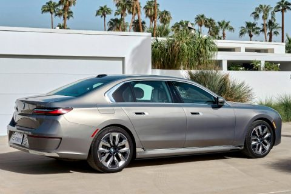
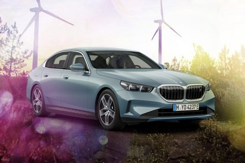
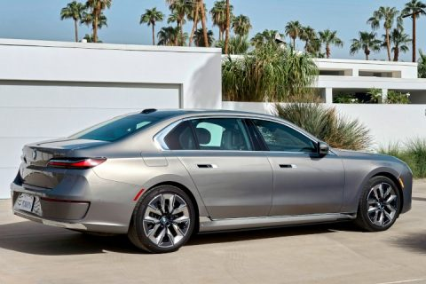
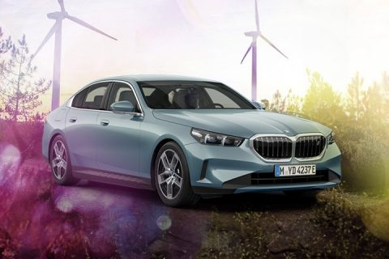
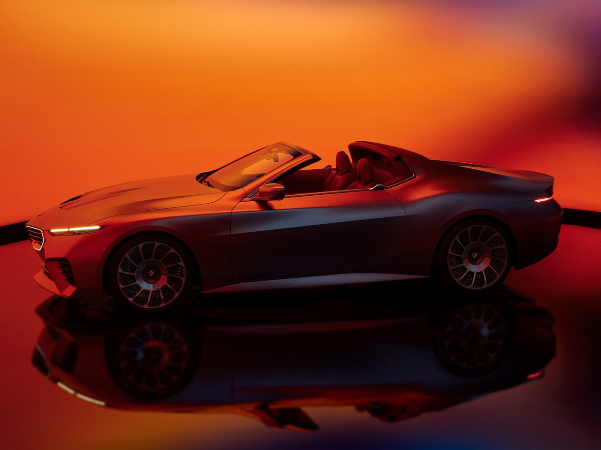
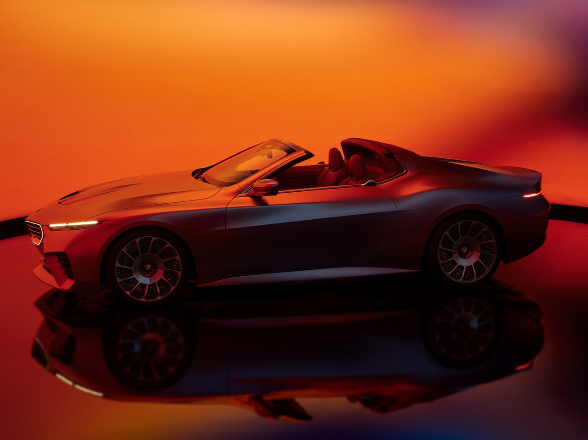
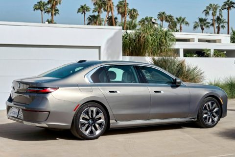
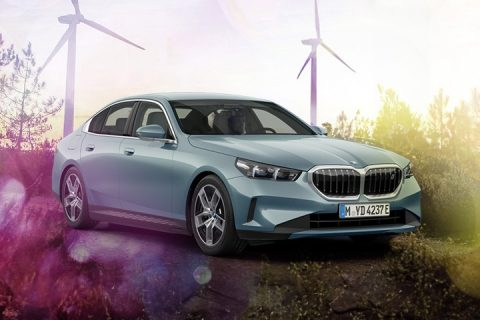
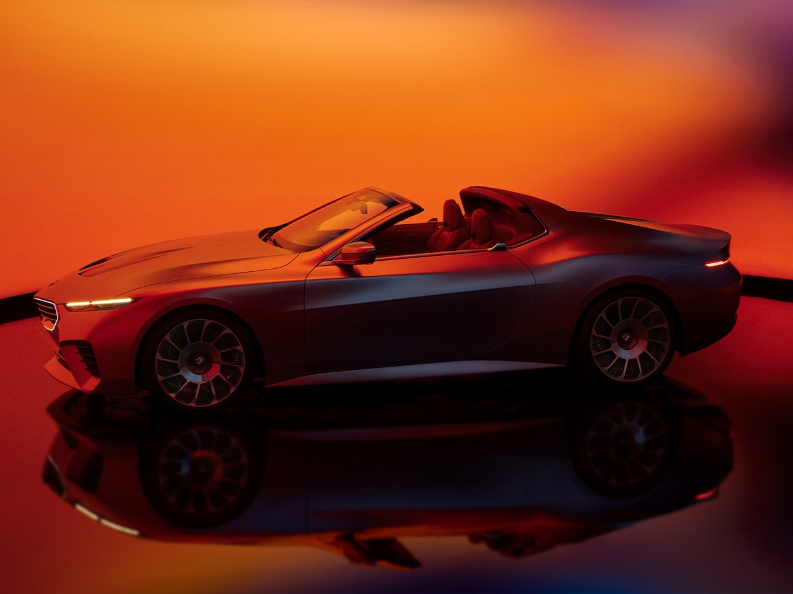

 

|



|
The official founding date of the German motor vehicle manufacturer BMW is 7 March 1916, when an aircraft producer called Bayerische Flugzeugwerke (formerly Otto Flugmaschinenfabrik) was established.[1][2] This company was renamed to Bayerische Motoren Werke (BMW) in 1922. However, the BMW name dates back to 1917, when Rapp Motorenwerke changed its name to Bayerische Motoren Werke.[3] BMW's first product was a straight-six aircraft engine called the BMW IIIa. Following the end of World War I, BMW remained in business by producing motorcycle engines, farm equipment, household items and railway brakes.
This was not enough and the company was suspended, bankrupt really, from 6 November 1918 to 1 February 1919. BMW turned to motorcycle engine manufacturing, building a smooth operating horizontally opposed engine to keep the centre of mass low and thus make a more responsive machine. The engine was well received but the motorcycles made using it were not and sold slowly. BMW's General Director Franz Josef Popp had to branch out again and BMW became a sub-contract manufacturer for braking system manufacturer Knorr Bremse. The major shareholder in BMW, Vienna based Italian speculator Camillo Castiglionli, sold all of his shares to Knorr Bremse in May 1920, who then acquired the remaining shares to make BMW a wholly owned subsidiary still run by Popp. Less than two years later Popp persuaded Castiglionli buy back the BMW company name and buy the Bayerische Flugzeugwerke for its production site on the other side of the air field.
The company purchased the Rover Group in 1994, but the takeover was not successful and caused BMW large financial losses. In 2000, BMW sold off most of the Rover brands, retaining only Mini. BMW acquired the rights to the Rolls-Royce brand in 1998.
The 1995 BMW Z3 expanded the line-up to include a mass-production two-seat roadster, and the 1999 BMW X5 was the company's entry into the SUV market.
Their first mass-produced turbocharged petrol engine was introduced in 1980 (m102), with most engines switching over to turbocharging over the following decade. The first hybrid BMW was the 2010 BMW ActiveHybrid 7, and BMW's first electric car was the BMW i3 city car, which was released in 2013. After many years of establishing a reputation for sporting rear-wheel drive cars, BMW's first front-wheel drive car was the 2014 BMW 2 Series Active Tourer multi-purpose vehicle (MPV).